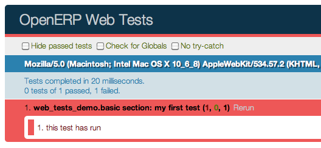

挂件
class Widget()
Exported in web.Widget, the base class for all visual components.
It corresponds to an MVC view, and provides a number of service to
simplify handling of a section of a page:
手柄部件之间的父/子关系
- Provides extensive lifecycle management with safety features (e.g. automatically destroying children widgets during the destruction of a parent)
- Automatic rendering with qweb
Backbone兼容的捷径
DOM根
A Widget() is responsible for a section of the page
materialized by the DOM root of the widget.
A widget's DOM root is available via two attributes:
Widget.el
设置为根小部件的原始DOM元素
Widget.$el
jQuery wrapper around el
There are two main ways to define and generate this DOM root:
Widget.template
Should be set to the name of a QWeb template. If set, the template will be rendered after the widget has been initialized but before it has been started. The root element generated by the template will be set as the DOM root of the widget.
Widget.tagName
Used if the widget has no template defined. Defaults to div,
will be used as the tag name to create the DOM element to set as
the widget's DOM root. It is possible to further customize this
generated DOM root with the following attributes:
Widget.id
用于生成所产生的DOM根的``id``属性。
Widget.className
用于生成生成的DOM根``class``属性。
Widget.attributes
Mapping (object literal) of attribute names to attribute values. Each of these k:v pairs will be set as a DOM attribute on the generated DOM root.
所有这些情况下使用一个模板上的插件指定。
DOM的根也可以通过overridding编程定义
Widget.renderElement()
Renders the widget's DOM root and sets it. The default
implementation will render a set template or generate an element
as described above, and will call
setElement() on the result.
Any override to renderElement() which
does not call its _super must call
setElement() with whatever it
generated or the widget's behavior is undefined.
注解
The default renderElement() can
be called repeatedly, it will replace the previous DOM root
(using replaceWith). However, this requires that the
widget correctly sets and unsets its events (and children
widgets). Generally, renderElement() should
not be called repeatedly unless the widget advertizes this feature.
使用挂件
A widget's lifecycle has 3 main phases:
创建和小部件的实例的初始化
Widget.init(parent)挂件，同步的初始化方法，可以覆盖从挂件的创建者/家长需要更多的参数
参数- parent (
Widget()) -- 新的小部件的父，用来处理自动销毁和事件传播。可``null``以供小窗口没有父。
- parent (
DOM injection and startup, this is done by calling one of:
Widget.appendTo(element)Renders the widget and inserts it as the last child of the target, uses .appendTo()
Widget.prependTo(element)Renders the widget and inserts it as the first child of the target, uses .prependTo()
Widget.insertAfter(element)Renders the widget and inserts it as the preceding sibling of the target, uses .insertAfter()
Widget.insertBefore(element)Renders the widget and inserts it as the following sibling of the target, uses .insertBefore()
All of these methods accept whatever the corresponding jQuery method accepts (CSS selectors, DOM nodes or jQuery objects). They all return a deferred and are charged with three tasks:
- rendering the widget's root element via
renderElement() 插入使用任何它们匹配的jQuery方法在DOM挂件的根元素
开始小部件，并返回启动它的结果
Widget.start()widget的异步启动，一旦它在DOM被注入，通常用于执行异步RPC调用获取任何远程数据所必需的部件，以完成其工作。
必须返回一个deferred_以指示其工作已经完成。
A widget is not guaranteed to work correctly until its
start()method has finished executing. The widget's parent/creator must wait for a widget to be fully started before interacting with it返回deferred object
- rendering the widget's root element via
挂件的破坏和清理
Widget.destroy()破坏了widget的儿童，解除绑定的事件，并从DOM删除其根。自动调用时，小部件的父被销毁，必须显式调用，如果该部件有没有父母，或者如果它被删除，但其父仍然存在。
小部件被破坏是从它的父自动解除链接。
Related to widget destruction is an important utility method:
Widget.alive(deferred[, reject=false])
与RPC和销毁显著的问题是，一个RPC调用可能需要很长的时间来执行，而小部件被销毁，或者被摧毁后，试图在一个破碎/无效状态的一个小部件执行其操作返回。
这是错误或怪异的行为的一个常见来源。
alive() can be used to wrap an RPC call,
ensuring that whatever operations should be executed when the call ends
are only executed if the widget is still alive:
this.alive(this.model.query().all()).then(function (records) {
// would break if executed after the widget is destroyed, wrapping
// rpc in alive() prevents execution
_.each(records, function (record) {
self.$el.append(self.format(record));
});
});
Widget.isDestroyed()
访问DOM内容
- 因为一个小部件只负责低于其DOM的根的内容，有
- is a shortcut for selecting sub-sections of a widget's DOM:
Widget.$(selector)
Applies the CSS selector specified as parameter to the widget's DOM root:
this.$(selector);
is functionally identical to:
this.$el.find(selector);
- selector (String) -- CSS选择器
注解
这个辅助方法类似于``Backbone.View。$``
重置DOM根
Widget.setElement(element)
重新设置挂件的DOM根提供的元素，也处理重新设定的DOM根的各种别名以及解封，重新设定授权事件。
- element (Element) -- DOM元素或jQuery对象设置为小部件的DOM根
注解
应与`骨干setElement`_基本上兼容
DOM事件处理
甲插件通常需要以内的页面的其部分响应用户行动。这需要结合事件的DOM元素。
To this end, Widget() provides a shortcut:
Widget.events
Events are a mapping of an event selector (an event name and an optional
CSS selector separated by a space) to a callback. The callback can
be the name of a widget's method or a function object. In either case, the
this will be set to the widget:
events: {
'click p.oe_some_class a': 'some_method',
'change input': function (e) {
e.stopPropagation();
}
},
The selector is used for jQuery's event delegation, the callback will only be triggered for descendants of the DOM root matching the selector1. If the selector is left out (only an event name is specified), the event will be set directly on the widget's DOM root.
Widget.delegateEvents()
This method is in charge of binding events to the
DOM. It is automatically called after setting the widget's DOM root.
It can be overridden to set up more complex events than the
events map allows, but the parent should always be
called (or events won't be handled correctly).
Widget.undelegateEvents()
This method is in charge of unbinding events from
the DOM root when the widget is destroyed or the DOM root is reset, in
order to avoid leaving "phantom" events.
It should be overridden to un-set any event set in an override of
delegateEvents().
注解
这种行为应该与'骨干delegateEvents`_兼容，除了不接受任何参数。
子类化的widget
Widget() is subclassed in the standard manner (via the
extend() method), and provides a number of
abstract properties and concrete methods (which you may or may not want to
override). Creating a subclass looks like this:
var MyWidget = Widget.extend({
// QWeb template to use when rendering the object
template: "MyQWebTemplate",
events: {
// events binding example
'click .my-button': 'handle_click',
},
init: function(parent) {
this._super(parent);
// insert code to execute before rendering, for object
// initialization
},
start: function() {
var sup = this._super();
// post-rendering initialization code, at this point
// allows multiplexing deferred objects
return $.when(
// propagate asynchronous signal from parent class
sup,
// return own's asynchronous signal
this.rpc(/* … */))
}
});
The new class can then be used in the following manner:
// Create the instance
var my_widget = new MyWidget(this);
// Render and insert into DOM
my_widget.appendTo(".some-div");
After these two lines have executed (and any promise returned by
appendTo() has been resolved if needed), the widget is
ready to be used.
注解
the insertion methods will start the widget themselves, and will
return the result of start().
If for some reason you do not want to call these methods, you will
have to first call render() on the
widget, then insert it into your DOM and start it.
If the widget is not needed anymore (because it's transient), simply terminate it:
my_widget.destroy();
将解除所有的DOM事件，从DOM中删除widget的内容并销毁所有部件的数据。
开发指南
Identifiers (
idattribute) should be avoided. In generic applications and modules,idlimits the re-usability of components and tends to make code more brittle. Most of the time, they can be replaced with nothing, classes or keeping a reference to a DOM node or jQuery element.If an
idis absolutely necessary (because a third-party library requires one), the id should be partially generated using_.uniqueId()e.g.:this.id = _.uniqueId('my-widget-')
- Avoid predictable/common CSS class names. Class names such as "content" or "navigation" might match the desired meaning/semantics, but it is likely an other developer will have the same need, creating a naming conflict and unintended behavior. Generic class names should be prefixed with e.g. the name of the component they belong to (creating "informal" namespaces, much as in C or Objective-C).
- Global selectors should be avoided. Because a component may be used several
times in a single page (an example in Odoo is dashboards), queries should be
restricted to a given component's scope. Unfiltered selections such as
$(selector)ordocument.querySelectorAll(selector)will generally lead to unintended or incorrect behavior. Odoo Web'sWidget()has an attribute providing its DOM root ($el), and a shortcut to select nodes directly ($()). - More generally, never assume your components own or controls anything beyond
its own personal
$el HTML模板/渲染应该使用QWeb，除非绝对微不足道。
- All interactive components (components displaying information to the screen
or intercepting DOM events) must inherit from
Widget()and correctly implement and use its API and life cycle.
RPC
To display and interact with data, calls to the Odoo server are necessary. This is performed using RPC <Remote Procedure Call>.
Odoo Web provides two primary APIs to handle this: a low-level JSON-RPC based API communicating with the Python section of Odoo Web (and of your module, if you have a Python part) and a high-level API above that allowing your code to talk directly to high-level Odoo models.
All networking APIs are asynchronous. As a result, all of them will return Deferred objects (whether they resolve those with values or not). Understanding how those work before before moving on is probably necessary.
High-level API: calling into Odoo models
Access to Odoo object methods (made available through XML-RPC from the server)
is done via Model() (exported in web.Model). It maps onto the Odoo server objects via
two primary methods, call() and
query().
call() is a direct mapping to the corresponding method of
the Odoo server object. Its usage is similar to that of the Odoo Model API,
with three differences:
- The interface is asynchronous, so instead of returning results directly RPC method calls will return Deferred instances, which will themselves resolve to the result of the matching RPC call.
由于ECMAScript的3 / Javascript的1.5犯规特征的任何等同于``__getattr__``或``method_missing``，需要有一个明确的方法来调度RPC方法。
No notion of pooler, the model proxy is instantiated where needed, not fetched from an other (somewhat global) object:
var Users = new Model('res.users'); Users.call('change_password', ['oldpassword', 'newpassword'], {context: some_context}).then(function (result) { // do something with change_password result });
query() is a shortcut for a builder-style
interface to searches (search + read in Odoo RPC terms). It
returns a Query() object which is immutable but
allows building new Query() instances from the
first one, adding new properties or modifiying the parent object's:
Users.query(['name', 'login', 'user_email', 'signature'])
.filter([['active', '=', true], ['company_id', '=', main_company]])
.limit(15)
.all().then(function (users) {
// do work with users records
});
The query is only actually performed when calling one of the query
serialization methods, all() and
first(). These methods will perform a new
RPC call every time they are called.
For that reason, it's actually possible to keep "intermediate" queries around and use them differently/add new specifications on them.
class Model(name)
Model.name
模型的这个对象绑定到名字
Model.call(method[, args][, kwargs])
调用当前模型的``method``方法，与提供位置和关键字参数。
- method (String) -- method to call over rpc on the
name - args (Array<>) -- 位置参数传递给方法，可选
- kwargs (Object<>) -- 关键字参数传递给方法，可选
Model.query(fields)
- fields (Array<String>) -- 字段列表的搜索过程中获取
Query() object
representing the search to performclass openerp.web.Query(fields)
The first set of methods is the "fetching" methods. They perform RPC queries using the internal data of the object they're called on.
openerp.web.Query.all()
Fetches the result of the current Query() object's
search.
openerp.web.Query.first()
Fetches the first result of the current
Query(), or null if the current
Query() does have any result.
openerp.web.Query.count()
Fetches the number of records the current
Query() would retrieve.
openerp.web.Query.group_by(grouping...)
取出的组进行查询，使用所述第一指定的分组参数
- grouping (Array<String>) -- 列出的分组问的服务器的水平。分组实际上可以是一个数组或可变参数。
The second set of methods is the "mutator" methods, they create a
new Query() object with the relevant
(internal) attribute either augmented or replaced.
openerp.web.Query.context(ctx)
将提供的``ctx``的查询，对现有环境的顶部
openerp.web.Query.filter(domain)
将提供的域名查询，该域名是``AND``-ED现有的查询域。
opeenrp.web.Query.offset(offset)
Sets the provided offset on the query. The new offset replaces the old one.
openerp.web.Query.limit(limit)
Sets the provided limit on the query. The new limit replaces the old one.
openerp.web.Query.order_by(fields…)
Overrides the model's natural order with the provided field
specifications. Behaves much like Django's QuerySet.order_by:
- Takes 1..n field names, in order of most to least importance (the first field is the first sorting key). Fields are provided as strings.
- A field specifies an ascending order, unless it is prefixed
with the minus sign "
-" in which case the field is used in the descending order
Divergences from Django's sorting include a lack of random sort
(? field) and the inability to "drill down" into relations
for sorting.
Aggregation (grouping)
Odoo has powerful grouping capacities, but they are kind-of strange
in that they're recursive, and level n+1 relies on data provided
directly by the grouping at level n. As a result, while
openerp.models.Model.read_group() works it's not a very intuitive
API.
Odoo Web eschews direct calls to read_group()
in favor of calling a method of Query(), much
in the way it is one in SQLAlchemy
2:
some_query.group_by(['field1', 'field2']).then(function (groups) {
// do things with the fetched groups
});
This method is asynchronous when provided with 1..n fields (to group
on) as argument, but it can also be called without any field (empty
fields collection or nothing at all). In this case, instead of
returning a Deferred object it will return null.
When grouping criterion come from a third-party and may or may not list fields (e.g. could be an empty list), this provides two ways to test the presence of actual subgroups (versus the need to perform a regular query for records):
A check on
group_by's result and two completely separate code paths:var groups; if (groups = some_query.group_by(gby)) { groups.then(function (gs) { // groups }); } // no groups
Or a more coherent code path using
when()'s ability to coerce values into deferreds:$.when(some_query.group_by(gby)).then(function (groups) { if (!groups) { // No grouping } else { // grouping, even if there are no groups (groups // itself could be an empty array) } });
The result of a (successful) group_by() is
an array of QueryGroup():
class openerp.web.QueryGroup()
openerp.web.QueryGroup.get(key)
returns the group's attribute key. Known attributes are:
grouped_on其中分组字段是由于该组
value这组``grouped_on``的价值
length记录的组中的号
aggregates- a {field: value} mapping of aggregations for the group
openerp.web.QueryGroup.query([fields...])
equivalent to Model.query() but pre-filtered to
only include the records within this group. Returns a
Query() which can be further manipulated as
usual.
openerp.web.QueryGroup.subgroups()
returns a deferred to an array of QueryGroup()
below this one
Low-level API: RPC calls to Python side
While the previous section is great for calling core OpenERP code (models code), it does not work if you want to call the Python side of Odoo Web.
For this, a lower-level API exists on on
Session() objects (the class is exported in web.Session, but
an instance isusually available through web.session): the rpc method.
This method simply takes an absolute path (the absolute URL of the JSON route to call) and a mapping of attributes to values (passed as keyword arguments to the Python method). This function fetches the return value of the Python methods, converted to JSON.
For instance, to call the resequence of the
DataSet() controller:
session.rpc('/web/dataset/resequence', {
model: some_model,
ids: array_of_ids,
offset: 42
}).then(function (result) {
// resequence didn't error out
}, function () {
// an error occured during during call
});
Web客户端
Javascript的模块系统概述
A new module system (inspired from requirejs) has now been deployed. It has many advantages over the Odoo version 8 system.
- loading order: dependencies are guaranteed to be loaded first, even if files are not loaded in the correct order in the bundle files.
更容易文件分割成更小的逻辑单元。
- no global variables: easier to reason.
它可以检查每个依赖和家属。这使得重构简单得多，而且风险较小。
It has also some disadvantages:
文件需要使用模块的系统，如果他们想与odoo交互，因为各种对象仅在模块系统中可用的，并没有在全局变量
不支持循环依赖。这是有道理的，但它意味着一个人需要小心。
This is obviously a very large change and will require everyone to adopt new habits. For example, the variable openerp does not exist anymore. The new way of doing things is to import explicitely the module you need, and declaring explicitely the objects you export. Here is a simple example:
odoo.define('addon_name.service', function (require) {
var utils = require('web.utils');
var Model = require('web.Model');
// do things with utils and Model
var something_useful = 15;
return {
something_useful: something_useful,
};
});
This snippet shows a module named addon_name.service. It is defined
with the odoo.define function. odoo.define takes a name and a
function for arguments:
名称是它是在定义的插件并描述其用途的名称的名称的串联。
- The function is the place where the javascript module is actually
defined. It takes a function
requireas first argument, and returns something (or not, depending if it needs to export something). Therequirefunction is used to get a handle on the dependencies. In this case, it gives a handle on two javascript modules from thewebaddon, namelyweb.utilsandweb.Model.
The idea is that you define what you need to import (by using the
require function) and declare what you export (by returning
something). The web client will then make sure that your code is loaded
properly.
Modules are contained in a file, but a file can define several modules (however, it is better to keep them in separate files).
Each module can return a deferred. In that case, the module is marked as loaded only when the deferred is resolved, and its value is equal to the resolved value. The module can be rejected (unloaded). This will be logged in the console as info.
Missing dependencies: These modules do not appear in the page. It is possible that the JavaScript file is not in the page or that the module name is wrongFailed modules: A javascript error is detectedRejected modules: The module returns a rejected deferred. It (and its dependent modules) is not loaded.Rejected linked modules: Modules who depend on a rejected moduleNon loaded modules: Modules who depend on a missing or a failed module
Web客户端结构
The web client files have been refactored into smaller and simpler files. Here is a description of the current file structure:
the
framework/folder contains all basic low level modules. The modules here are supposed to be generic. Some of them are:[UNKNOWN NODE problematic]web.ajax``实现RPC调用
web.coreis a generic modules. It exports various useful objects and functions, such asqweb,_tor the main bus.[UNKNOWN NODE problematic]web.Widget``包含挂件类
[UNKNOWN NODE problematic]web.Model``是一个抽象的概念了``web.ajax``打电话到该服务器模型的方法
web.session``是前者``openerp.session[UNKNOWN NODE problematic]web.utils``有用的代码片段
web.timefor every time-related generic functions
在``视图/[UNKNOWN NODE problematic]文件夹包含所有视图定义
[UNKNOWN NODE problematic]部件/[UNKNOWN NODE problematic]是独立的部件
The js/ folder also contains some important files:
[UNKNOWN NODE problematic]action_manager.js``是ActionManager类
[UNKNOWN NODE problematic]boot.js``是实际执行的模块系统中的文件
[UNKNOWN NODE problematic]menu.js``是顶部菜单的定义
[UNKNOWN NODE problematic]web_client.js``是根小部件的WebClient
[UNKNOWN NODE problematic]view_manager.js``包含ViewManager
其他两个文件是``tour.js``的旅游和``compatibility.js``。后者文件是一个兼容层桥接旧体制到新的模块系统。这是每一个模块名称远销全局变量``openerp``。从理论上讲，我们的插件应该工作而没有使用可变``openerp``，并兼容模块，可以安全地禁用。
Javascript的约定
Here are some basic conventions for the javascript code:
声明你的依赖在模块的顶部。此外，他们应该按字母顺序模块名称排序。这使得它更容易理解你的模块。
声明所有出口在年底。
加上``使用strict``声明在每个模块开始
- always name your module properly:
addon_name.description. - use capital letters for classes (for example,
ActionManageris defined in the moduleweb.ActionManager), and lowercase for everything else (for example,ajaxis defined inweb.ajax). 每个申报文件的一个模块
Odoo Web客户端的测试
Javascript的单元测试
Odoo网络包括手段，单元测试既Odoo Web和自己的JavaScript模块的核心代码。在JavaScript端，单元测试是基于QUnit_与一些助手和扩展与Odoo更好的整合。
To see what the runner looks like, find (or start) an Odoo server
with the web client enabled, and navigate to /web/tests
This will show the runner selector, which lists all modules with javascript
unit tests, and allows starting any of them (or all javascript tests in all
modules at once).

Clicking any runner button will launch the corresponding tests in the bundled QUnit runner:

编写测试用例
The first step is to list the test file(s). This is done through the
test key of the Odoo manifest, by adding javascript files to it:
{
'name': "Demonstration of web/javascript tests",
'category': 'Hidden',
'depends': ['web'],
'test': ['static/test/demo.js'],
}
and to create the corresponding test file(s)
注解
Test files which do not exist will be ignored, if all test files of a module are ignored (can not be found), the test runner will consider that the module has no javascript tests.
After that, refreshing the runner selector will display the new module and allow running all of its (0 so far) tests:

The next step is to create a test case:
openerp.testing.section('basic section', function (test) {
test('my first test', function () {
ok(false, "this test has run");
});
});
All testing helpers and structures live in the openerp.testing
module. Odoo tests live in a section(),
which is itself part of a module. The first argument to a section is
the name of the section, the second one is the section body.
test, provided by the
section() to the callback, is used to
register a given test case which will be run whenever the test runner
actually does its job. Odoo Web test case use standard QUnit
assertions within them.
Launching the test runner at this point will run the test and display the corresponding assertion message, with red colors indicating the test failed:
Fixing the test (by replacing false to true in the assertion)
will make it pass:
断言
As noted above, Odoo Web's tests use qunit assertions. They are available globally (so they can just be called without references to anything). The following list is available:
ok(state[, message])
checks that state is truthy (in the javascript sense)
strictEqual(actual, expected[, message])
checks that the actual (produced by a method being tested) and
expected values are identical (roughly equivalent to ok(actual
=== expected, message))
notStrictEqual(actual, expected[, message])
checks that the actual and expected values are not identical
(roughly equivalent to ok(actual !== expected, message))
deepEqual(actual, expected[, message])
deep comparison between actual and expected: recurse into containers (objects and arrays) to ensure that they have the same keys/number of elements, and the values match.
notDeepEqual(actual, expected[, message])
inverse operation to deepEqual()
throws(block[, expected][, message])
检查，调用它时，在``block``抛出一个错误。可选验证对``expected``的错误。
- block (Function) --
- expected (Error | RegExp) -- 如果一个正则表达式，检查，抛出的错误的信息的正则表达式匹配。如果错误类型，检查，抛出的错误是类型。
equal(actual, expected[, message])
将检查``actual``和``expected``松散相等，使用``==``运营商和它的强制规则。
notEqual(actual, expected[, message])
inverse operation to equal()
获得一个Odoo实例
The Odoo instance is the base through which most Odoo Web modules behaviors (functions, objects, …) are accessed. As a result, the test framework automatically builds one, and loads the module being tested and all of its dependencies inside it. This new instance is provided as the first positional parameter to your test cases. Let's observe by adding javascript code (not test code) to the test module:
{
'name': "Demonstration of web/javascript tests",
'category': 'Hidden',
'depends': ['web'],
'js': ['static/src/js/demo.js'],
'test': ['static/test/demo.js'],
}
// src/js/demo.js
openerp.web_tests_demo = function (instance) {
instance.web_tests_demo = {
value_true: true,
SomeType: instance.web.Class.extend({
init: function (value) {
this.value = value;
}
})
};
};
and then adding a new test case, which simply checks that the
instance contains all the expected stuff we created in the
module:
// test/demo.js
test('module content', function (instance) {
ok(instance.web_tests_demo.value_true, "should have a true value");
var type_instance = new instance.web_tests_demo.SomeType(42);
strictEqual(type_instance.value, 42, "should have provided value");
});
DOM便签
As in the wider client, arbitrarily accessing document content is
strongly discouraged during tests. But DOM access is still needed to
e.g. fully initialize widgets before
testing them.
Thus, a test case gets a DOM scratchpad as its second positional parameter, in a jQuery instance. That scratchpad is fully cleaned up before each test, and as long as it doesn't do anything outside the scratchpad your code can do whatever it wants:
// test/demo.js
test('DOM content', function (instance, $scratchpad) {
$scratchpad.html('<div><span class="foo bar">ok</span></div>');
ok($scratchpad.find('span').hasClass('foo'),
"should have provided class");
});
test('clean scratchpad', function (instance, $scratchpad) {
ok(!$scratchpad.children().length, "should have no content");
ok(!$scratchpad.text(), "should have no text");
});
注解
The top-level element of the scratchpad is not cleaned up, test
cases can add text or DOM children but shoud not alter
$scratchpad itself.
加载模板
To avoid the corresponding processing costs, by default templates are
not loaded into QWeb. If you need to render e.g. widgets making use of
QWeb templates, you can request their loading through the
templates option to the test case
function.
This will automatically load all relevant templates in the instance's qweb before running the test case:
{
'name': "Demonstration of web/javascript tests",
'category': 'Hidden',
'depends': ['web'],
'js': ['static/src/js/demo.js'],
'test': ['static/test/demo.js'],
'qweb': ['static/src/xml/demo.xml'],
}
<!-- src/xml/demo.xml -->
<templates id="template" xml:space="preserve">
<t t-name="DemoTemplate">
<t t-foreach="5" t-as="value">
<p><t t-esc="value"/></p>
</t>
</t>
</templates>
// test/demo.js
test('templates', {templates: true}, function (instance) {
var s = instance.web.qweb.render('DemoTemplate');
var texts = $(s).find('p').map(function () {
return $(this).text();
}).get();
deepEqual(texts, ['0', '1', '2', '3', '4']);
});
异步的情况下
The test case examples so far are all synchronous, they execute from the first to the last line and once the last line has executed the test is done. But the web client is full of asynchronous code, and thus test cases need to be async-aware.
This is done by returning a deferred from the
case callback:
// test/demo.js
test('asynchronous', {
asserts: 1
}, function () {
var d = $.Deferred();
setTimeout(function () {
ok(true);
d.resolve();
}, 100);
return d;
});
This example also uses the options parameter
to specify the number of assertions the case should expect, if less or
more assertions are specified the case will count as failed.
Asynchronous test cases must specify the number of assertions they will run. This allows more easily catching situations where e.g. the test architecture was not warned about asynchronous operations.
注解
Asynchronous test cases also have a 2 seconds timeout: if the test does not finish within 2 seconds, it will be considered failed. This pretty much always means the test will not resolve. This timeout only applies to the test itself, not to the setup and teardown processes.
注解
If the returned deferred is rejected, the test will be failed
unless fail_on_rejection is set to
false.
RPC
An important subset of asynchronous test cases is test cases which need to perform (and chain, to an extent) RPC calls.
注解
Because they are a subset of asynchronous cases, RPC cases must
also provide a valid assertions count.
To enable mock RPC, set the rpc option to
mock. This will add a third parameter to the test case callback:
mock(rpc_spec, handler)
Can be used in two different ways depending on the shape of the first parameter:
If it matches the pattern
model:method(if it contains a colon, essentially) the call will set up the mocking of an RPC call straight to the Odoo server (through XMLRPC) as performed via e.g.openerp.web.Model.call().In that case,
handlershould be a function taking two argumentsargsandkwargs, matching the corresponding arguments on the server side and should simply return the value as if it were returned by the Python XMLRPC handler:test('XML-RPC', {rpc: 'mock', asserts: 3}, function (instance, $s, mock) { // set up mocking mock('people.famous:name_search', function (args, kwargs) { strictEqual(kwargs.name, 'bob'); return [ [1, "Microsoft Bob"], [2, "Bob the Builder"], [3, "Silent Bob"] ]; }); // actual test code return new instance.web.Model('people.famous') .call('name_search', {name: 'bob'}).then(function (result) { strictEqual(result.length, 3, "shoud return 3 people"); strictEqual(result[0][1], "Microsoft Bob", "the most famous bob should be Microsoft Bob"); }); });
Otherwise, if it matches an absolute path (e.g.
/a/b/c) it will mock a JSON-RPC call to a web client controller, such as/web/webclient/translations. In that case, the handler takes a singleparamsargument holding all of the parameters provided over JSON-RPC.As previously, the handler should simply return the result value as if returned by the original JSON-RPC handler:
test('JSON-RPC', {rpc: 'mock', asserts: 3, templates: true}, function (instance, $s, mock) { var fetched_dbs = false, fetched_langs = false; mock('/web/database/get_list', function () { fetched_dbs = true; return ['foo', 'bar', 'baz']; }); mock('/web/session/get_lang_list', function () { fetched_langs = true; return [['vo_IS', 'Hopelandic / Vonlenska']]; }); // widget needs that or it blows up instance.webclient = {toggle_bars: openerp.testing.noop}; var dbm = new instance.web.DatabaseManager({}); return dbm.appendTo($s).then(function () { ok(fetched_dbs, "should have fetched databases"); ok(fetched_langs, "should have fetched languages"); deepEqual(dbm.db_list, ['foo', 'bar', 'baz']); }); });
注解
Mock handlers can contain assertions, these assertions should be part of the assertions count (and if multiple calls are made to a handler containing assertions, it multiplies the effective number of assertions).
测试API
openerp.testing.section(name, [options, ]body)
A test section, serves as shared namespace for related tests (for
constants or values to only set up once). The body function
should contain the tests themselves.
Note that the order in which tests are run is essentially undefined, do not rely on it.
- name (String) --
- options (TestOptions) --
- body (Function<
case(), void>) --
openerp.testing.case(name, [options, ]callback)
Registers a test case callback in the test runner, the callback will only be run once the runner is started (or maybe not at all, if the test is filtered out).
- name (String) --
- options (TestOptions) --
- callback (Function<instance, $, Function<String, Function, void>>) --
class TestOptions()
the various options which can be passed to
section() or
case(). Except for
setup and
teardown, an option on
case() will overwrite the corresponding
option on section() so
e.g. rpc can be set for a
section() and then differently set for
some case() of that
section()
TestOptions.asserts
一个整数，这应该试验的正常执行期间运行声明的数目。强制性异步测试。
TestOptions.setup
Test case setup, run right before each test case. A section's
setup() is run before the case's own, if
both are specified.
TestOptions.teardown
Test case teardown, a case's teardown()
is run before the corresponding section if both are present.
TestOptions.fail_on_rejection
If the test is asynchronous and its resulting promise is
rejected, fail the test. Defaults to true, set to
false to not fail the test in case of rejection:
// test/demo.js
test('unfail rejection', {
asserts: 1,
fail_on_rejection: false
}, function () {
var d = $.Deferred();
setTimeout(function () {
ok(true);
d.reject();
}, 100);
return d;
});
TestOptions.rpc
RPC method to use during tests, one of "mock" or
"rpc". Any other value will disable RPC for the test (if
they were enabled by the suite for instance).
TestOptions.templates
Whether the current module (and its dependencies)'s templates
should be loaded into QWeb before starting the test. A
boolean, false by default.
The test runner can also use two global configuration values set
directly on the window object:
oe_all_dependenciesis anArrayof all modules with a web component, ordered by dependency (for a moduleAwith dependenciesA', any module ofA'must come beforeAin the array)
通过Python的运行
The web client includes the means to run these tests on the command-line (or in a CI system), but while actually running it is pretty simple the setup of the pre-requisite parts has some complexities.
安装PhantomJS。这是它允许自动运行和测试网页的无头的浏览器。 QUnitSuite_用它来实际运行qunit_测试套件。
该PhantomJS_网站提供预先生成的二进制文件，一些平台，和你的操作系统的包管理可能提供它。
If you're building PhantomJS from source, I recommend preparing for some knitting time as it's not exactly fast (it needs to compile both Qt and Webkit, both being pretty big projects).
注解
Because PhantomJS is webkit-based, it will not be able to test if Firefox, Opera or Internet Explorer can correctly run the test suite (and it is only an approximation for Safari and Chrome). It is therefore recommended to also run the test suites in actual browsers once in a while.
Install a new database with all relevant modules (all modules with a web component at least), then restart the server
注解
对于一些测试，源数据库需要被复制。此操作要求有与数据库连接不被复制，但Odoo目前不破坏现有/未完成的连接，所以重新启动服务器，以确保一切都在正确的状态，最简单的方法。
Launch
oe run-tests -d $DATABASE -mwebwith the correct addons-path specified (and replacing$DATABASEby the source database you created above)注解
如果你离开了``-mweb``，亚军将尝试在所有的模块，这可能会或可能无法正常工作运行所有测试。
If everything went correctly, you should now see a list of tests with
(hopefully) ok next to their names, closing with a report of the
number of tests run and the time it took:
test_empty_find (openerp.addons.web.tests.test_dataset.TestDataSetController) ... ok
test_ids_shortcut (openerp.addons.web.tests.test_dataset.TestDataSetController) ... ok
test_regular_find (openerp.addons.web.tests.test_dataset.TestDataSetController) ... ok
web.testing.stack: direct, value, success ... ok
web.testing.stack: direct, deferred, success ... ok
web.testing.stack: direct, value, error ... ok
web.testing.stack: direct, deferred, failure ... ok
web.testing.stack: successful setup ... ok
web.testing.stack: successful teardown ... ok
web.testing.stack: successful setup and teardown ... ok
[snip ~150 lines]
test_convert_complex_context (openerp.addons.web.tests.test_view.DomainsAndContextsTest) ... ok
test_convert_complex_domain (openerp.addons.web.tests.test_view.DomainsAndContextsTest) ... ok
test_convert_literal_context (openerp.addons.web.tests.test_view.DomainsAndContextsTest) ... ok
test_convert_literal_domain (openerp.addons.web.tests.test_view.DomainsAndContextsTest) ... ok
test_retrieve_nonliteral_context (openerp.addons.web.tests.test_view.DomainsAndContextsTest) ... ok
test_retrieve_nonliteral_domain (openerp.addons.web.tests.test_view.DomainsAndContextsTest) ... ok
----------------------------------------------------------------------
Ran 181 tests in 15.706s
OK
Congratulation, you have just performed a successful "offline" run of the OpenERP Web test suite.
注解
请注意，此运行所有的Python测试的``web``模块，但所有的Web测试所有Odoo的。这可能是令人惊讶的。
不是所有的DOM事件与事件代表团兼容
sqlalchemy.orm.query.Query.group_by() is not
terminal, it returns a query which can still be altered.